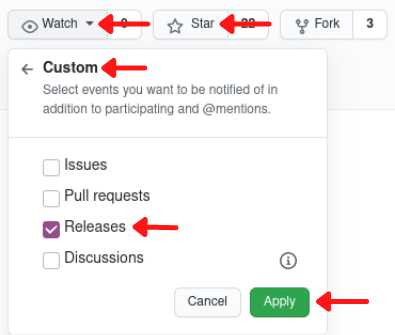

Before closing this side panel, please consider sponsoring this book to keep it freely available:
SPONSOR VIA GITHUBBUY ON GUMROAD
Special thanks to the book's monthly supporters


Hands-on Elixir & OTP: Cryptocurrency trading bot
0.3.1
Preface
Want to learn Elixir & OTP by creating a real-world project?
With “Hands-on Elixir & OTP: Cryptocurrency trading bot”, you will gain hands-on experience by writing an interesting software project from scratch. We will explore all the key abstractions and essential principles through iterative implementation improvements.
We will start by creating a new umbrella application, subscribing to WebSocket streams, implementing a basic trading flow, and focusing on improving it by expanding on the topics like supervision trees, resiliency, refactoring using macros, utilising the Registry, testing and others.
This book is 80% complete - chapters 1-17 are finished, and I’ll add more content soon. It’s also a loosely written representation of the Hands-on Elixir & OTP: Cryptocurrency trading bot video course released on YouTube.
This work is licensed under the Creative Commons Attribution-NonCommercial-ShareAlike 4.0 International CC BY-NC-SA 4.0.
To get notified about updates to this book just “watch” the source code’s repository and don’t forget to leave a star:

Limit of Liability/Disclaimer of Warranty
THIS BOOK IS NOT FINANCIAL ADVICE
THE SOFTWARE/BOOK IS PROVIDED “AS IS”, WITHOUT WARRANTY OF ANY KIND, EXPRESS OR IMPLIED, INCLUDING BUT NOT LIMITED TO THE WARRANTIES OF MERCHANTABILITY, FITNESS FOR A PARTICULAR PURPOSE AND NONINFRINGEMENT. IN NO EVENT SHALL THE AUTHORS OR COPYRIGHT HOLDERS BE LIABLE FOR ANY CLAIM, DAMAGES OR OTHER LIABILITY, WHETHER IN AN ACTION OF CONTRACT, TORT OR OTHERWISE, ARISING FROM, OUT OF OR IN CONNECTION WITH THE SOFTWARE/BOOK OR THE USE OR OTHER DEALINGS IN THE SOFTWARE/BOOK.
PDF & EPUB
To keep this book up to date as well as publicly available for people that can’t afford to pay for it, it’s available in HTML format online free of charge.
PDF & EPUB formats are available to backers using either GitHub Sponsors(it supports both one-offs payments as well as “monthly” plans) or Gumroad.
Preface
In recent years Elixir programming language gained a lot of interest in the industry.
Its unmatched parallelization capabilities are unique and powerful, making it a great candidate for highly concurrent systems like the ones trading assets on exchanges.
In this book, we will go through the development process of a cryptocurrency trading bot in Elixir. We will start ground up and chapter by chapter progress with the implementation ending up with a fully-fledged naive trading strategy. We will be designing process supervision trees, describing why specific decisions were taken and how will they impact the system going forward.
By any stretch of the imagination, I don’t believe that “this is the only way”(nor even the best way) to create a cryptocurrency trading bot in Elixir. This book focuses more on building a real-life project and iterating over it, taking decisions on the way as it would happen in a real work environment. Some parts will be “perfect” the first time around, but there are also others, where we will take compromises to “get it to working” and then when the time is right, we will refactor them as we will gain a better understanding of the domain problem.
Who this book is for
This book will be a great resource for everyone that already knows the basics of Elixir and wants to get a feel of how developing a non-trivial system looks like using it.
Readers do not need deep knowledge about cryptocurrencies to follow along as I will shy away from crypto/trading jargon as well as will explain it whenever it’s unavoidable.
This is not a book focused on trading strategies, neither it’s financial advice to trade at all. The main focus of this book is to showcase how the implementation of even complex problems can be achieved in Elixir by simple processes working together in an orchestrated manner.
The strategy described in this book is naive and most probably will end up losing money, but that’s not the point of this book. As we will build up the strategy we will face a spectrum of problems that developers face at work. It’s a great primer if you want to get your first “project” behind your belt.
So, if you’ve already gone through the motions and learned Elixir and OTP but still feel like you need to get your hands dirty with a “real problem” to “make it stick”, this book is for you.
What this book covers
This book is an ongoing project, and at present, it contains the following chapters:
- Chapter 1 - Stream live cryptocurrency prices from the Binance WSS
Stream live cryptocurrency prices (trade events) from the Binance exchange. Starting grounds up, we will create a new umbrella project and a streamer application inside it. The streamer application will use a Websocket client called WebSockex to connect with the Binance API and receive a live feed. After receiving the event as a JSON string, we will decode it using the jason library and convert it to our data struct. At the end of the chapter, we will see decoded trade events being logged to the terminal.
- Chapter 2 - Create a naive trading strategy - single trader without supervision
In this chapter, we will create our first naive trading strategy. We will create another application inside our umbrella called naive. We will put data streamed to our streamer application to good use by sending it over to the naive application. We will start with a very basic solution consisting of a single process called trader that will utilize the GenServer behaviour. It will allow us to go through the full trading cycle and give us something that “works”.
- Chapter 3 - Introduce PubSub as a communication method
To allow our trading strategy to scale to multiple parallel traders, we need to find a way to distribute the latest prices (trade events) to those multiple traders. We will introduce PubSub to broadcast messages from the streamer(s) to the trader(s). PubSub will allow us to break hardcoded references between applications in our umbrella and that will become a pattern that we will utilize moving forward.
- Chapter 4 - Mock the Binance API
Besides historical prices (trade events), to perform backtesting, we need to be able to mock placing orders and get trade events back as they are filled. In this chapter, we will focus on developing the solution that will allow our trader to “trade” without contacting the Binance exchange(for people without Binance accounts), it will also allow us to backtest our trading strategy.
- Chapter 5 - Enable parallel trading on multiple symbols
Our basic strategy implementation from the last chapter is definitely too basic to be used in a “production environment” - it can’t be neither scaled nor it is fault-tolerant. In this chapter, we will upgrade our naive strategy to be more resilient. This will require a supervision tree to be created and will allow us to see different supervision strategies in action and understand the motivation behind using and stacking them.
- Chapter 6 - Introduce a
buy_down_intervalto make a single trader more profitable
At this moment our Naive.Trader implementation will blindly place a buy order at the price of the last trade event. Whenever the Naive.Trader process will finish trade, a new Naive.Trader process will be started and it will end up placing a buy order at the same price as the price of the previous sell order. This will cost us double the fee without gaining any advantage and would cause further complications down the line, so we will introduce a buy_down_interval which will allow the Naive.Trader processes to place a buy order below the current trade event’s price.
- Chapter 7 - Introduce a trader budget and calculating the quantity
Since the second chapter, our Naive.Trader processes are placing orders with a hardcoded quantity of 100. In this chapter, we will introduce a budget that will be evenly split between the Naive.Trader processes using chunks. We will utilize that budget to calculate quantity (to be able to do that we need to fetch further step_size information from the Binance API).
- Chapter 8 - Add support for multiple transactions per order
Our Naive.Trader implementation assumes that our orders will be filled within a single transaction, but this isn’t always the case. In this chapter, we will discuss how could we implement the support for multiple transactions per order and race conditions that could occur between the bot and the Binance API.
- Chapter 9 - Run multiple traders in parallel
With PubSub, supervision tree, buy down and budget in place we can progress with scaling the number of traders. This will require further improvements to our trading strategy like introducing a rebuy_interval. At the end of this chapter, our trading strategy will be able to start and run multiple traders in parallel.
- Chapter 10 - Fine-tune trading strategy per symbol
Currently, the naive strategy works based on settings hardcoded in the leader module. To allow for fine-tuning the naive trading strategy per symbol we will introduce a new database together with the table that will store trading settings.
- Chapter 11 - Supervise and autostart streaming
In the last chapter, we introduced a new database inside the naive application to store default settings, in this chapter we will do the same for the streamer application. Inside the settings, there will be a status flag that will allow us to implement the autostarting functionality on initialization using Task abstraction.
- Chapter 12 - Start, stop, shutdown, and autostart trading
To follow up after autostarting streaming we will apply the same trick to the trading supervision tree using Task abstraction. We will need to introduce a new supervision level to achieve the correct supervision strategy.
- Chapter 13 - Abstract duplicated supervision code
As both the naive and the streamer applications contain almost the same copy-pasted code that allows us to start, stop and autostart workers. We will look into how could we abstract the common parts of that implementation into a single module. We will venture into utilizing the __using__ macro to get rid of the boilerplate.
- Chapter 14 - Store trade events and orders inside the database
To be able to backtest the trading strategy, we need to have historical prices (trade events) and a list of orders that were placed stored in the database, which will be the focus of this chapter. At this moment, the latest prices (trade events) are broadcasted to PubSub topic and traders are subscribing to it. We will create a new application called data_warehouse inside our umbrella that will be responsible for subscribing to the same PubSub topics and storing incoming prices (trade events) in the Postgres database. We will update the Naive.Trader module to broadcast orders as traders will place them.
Then we will move on to adding supervision similar to the one from the naive and the streamer applications but this time we will show how we could avoid using both common module and macros by utilizing the Registry module.
- Chapter 15 - Backtest trading strategy
In this chapter, we will be backtesting our trading strategy by developing a publisher inside the DataWarehouse application. It will stream trade events from the database to broadcast them to the TRADE_EVENTS:#{symbol} PubSub topic. It will use the same topic as data would be streamed directly from the Binance. From the trader’s perspective, it won’t any difference and will cause normal trading activity that will be stored inside the database to be analyzed later.
- Chapter 16 - End-to-end testing
We’ve reached the stage where we have a decent solution in place, and to ensure that it’s still working correctly after any future refactoring, we will add tests. We will start with the “integration”/“end-to-end”(E2E) test, which will confirm that the whole “trading” works. To perform tests at this level, we will need to orchestrate databases together with processes and broadcast trade events from within the test to cause our trading strategy to place orders. We will be able to confirm the right behaviour by checking the database after running the test.
- Chapter 17 - Mox rocks
In the previous chapter, we’ve implemented the end-to-end test that required a lot of prep work, and we were able to see the downsides of this type of test clearly. This chapter will focus on implementing a more granular test that will utilize the mox package to mock out the dependencies of the Naive.Trader. We will look into how the mox works and how we will need to modify our code to use it.
Contributing, Errata and Source code
The book is written using R Markdown(it’s a very similar syntax to the GitHub markdown but supports many more features including code execution, etc.) and converted to final form (for example PDF) using the bookdown app. This means that editing a chapter is as simple as editing the markdown source of that chapter.
There are two repositories related to this book(both hosted on Github):
- source code of the book itself
- code written across the book where the final code of each chapter has its own branch
In regards to contributions - I would love to follow the standard process of forking, making changes, opening PR(please look is there a branch for the next version and point to it instead of main), merging, and releasing a new version of the book.
This books has also the GitHub Discussions enabled for both the book’s repo as well as source code’s repo, please feel welcome to start any discussions related to book there.